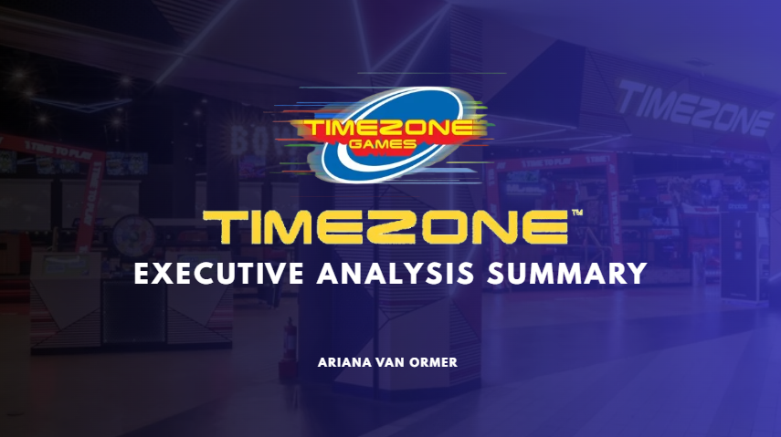

Analytics • Brand Strategy • Business Growth
Timezone Entertainment Group
Leveraging customer engagement insights, executive reporting, and market analysis to support growth initiatives and strategic decision-making across regional operations.

Analytics • Brand Strategy • Business Growth
Leveraging customer engagement insights, executive reporting, and market analysis to support growth initiatives and strategic decision-making across regional operations.
During my internship with Timezone Entertainment Group, I analyzed customer engagement trends and sales performance across regional locations to uncover growth opportunities and support strategic recommendations.
My work focused on connecting customer behavior, store-level performance, and market observations into clearer business recommendations for leadership and future growth initiatives.


This experience strengthened my ability to move from raw information to actionable recommendations. It required structured research, executive communication, and identifying meaningful patterns from customer behavior data.